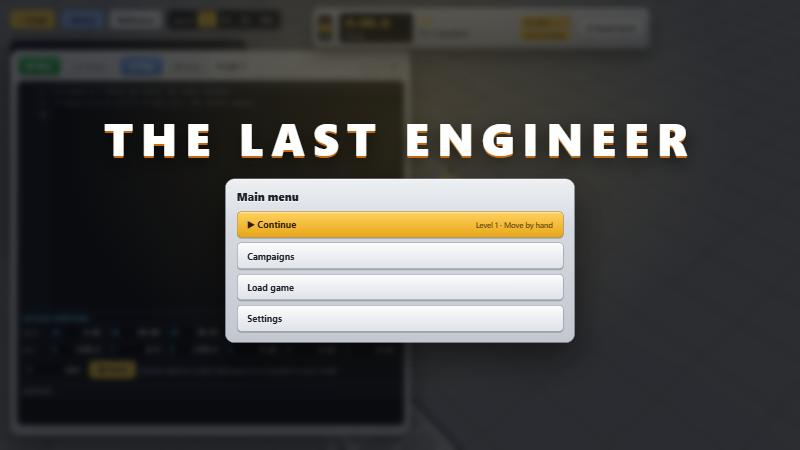
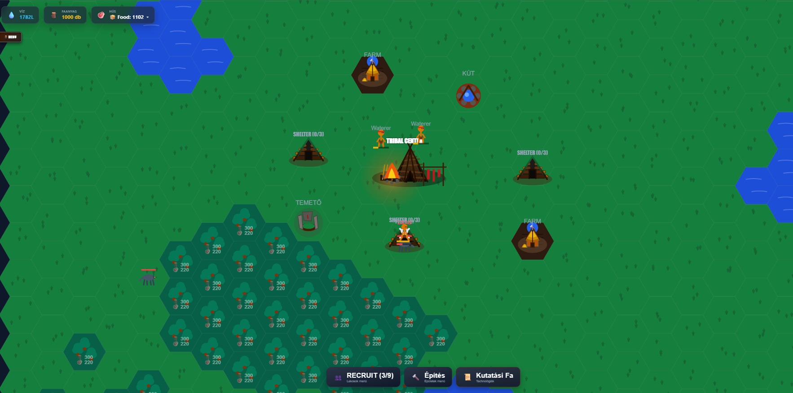

Interactive Web Engines, Embedded Firmware & Data Systems

Playable DemoThree.js & TypeScript
The Last Engineer
A robot programming game: program a six-axis robot arm in a small Python-style language to work a production cell, with PTP/LIN motion, a teach pendant and themed campaigns.
A logistics programming game: write real JavaScript to drive a fleet of tractors, harvesters, trucks and trains, farm fields, feed production chains and grow towns. Alpha for Windows.
Real-time microcontroller bridge connecting AgOpenGPS navigation software with physical steering actuators, 16-bit ADC WAS sensors, and OLED diagnostics.
⚡ Firmware ArchitectureTechnical Breakdown

Ollama & Llama 3.2Social Network Matrix
AgeSim: LLM Villager AI & Social Matrix
Intent-driven prehistoric simulation with local Llama 3.2 inference, anti-flicker cognitive scheduling, dynamic social matrix, and peer-to-peer blueprint sharing.
🤖 AI ArchitectureTechnical Breakdown
×
Live at world-of-farmers.netlify.appArchitecture & Technical Deep Dive
Farm Empire Tycoon — Engine Documentation
A comprehensive overview of the core state management, real-time simulation loop, field state machine, machinery wear mathematics, and offline progression algorithms.
The game runs a deterministic 1Hz heartbeat tick loop through a centralized React reducer (gameReducer). It manages active operation timers, automatic state reconciliation, and dynamic offline catch-up calculations upon session initialization.
Each field follows a rigid status state machine: idle ➔ plowing ➔ plowed ➔ seeding ➔ growing ➔ ready_to_harvest ➔ harvesting. An automated recovery pass fixes orphaned field states if asynchronous operations lose reference.
// -------------------------------------------------------------------// 2. FIELD STATUS TYPE & ORPHAN RECOVERY ALGORITHM// -------------------------------------------------------------------export typeFieldStatus = 'idle' | 'plowing' | 'plowed' | 'seeding' | 'growing' | 'ready_to_harvest' | 'harvesting';
// Recovery pass executed inside game loop to clean dangling flags:
fields.forEach(f => {
const hasOp = activeOps.some(op => op.fieldId === f.id);
if (!hasOp) {
if (f.status === 'plowing') {
f.status = 'idle';
f.assignedMachineIds = [];
} else if (f.status === 'seeding') {
f.status = 'plowed';
f.assignedMachineIds = [];
} else if (f.status === 'harvesting') {
f.status = 'ready_to_harvest';
f.assignedMachineIds = [];
} else if (f.status === 'growing') {
if ((f.growthProgress || 0) >= 100) {
f.status = 'ready_to_harvest';
}
}
}
});
Machinery condition wears down based on the field size (ha). A protective cap limits degradation to a maximum of 15% per single dispatch, protecting game balance on late-game mega estates.
// -------------------------------------------------------------------// 3. MAINTENANCE MANAGER FORMULAS & REPAIR CALCULATIONS// -------------------------------------------------------------------export classMaintenanceManager {
public staticcalculateWear(areaHectares: number, currentCondition: number): number {
const baseWear = 1.0; // 1.0% base operational wearconst hectareWear = areaHectares * 0.15; // +0.15% per hectarelet totalWear = baseWear + hectareWear;
// Safety cap: prevent instant destruction on giant estatesif (totalWear > 15) {
totalWear = 15;
}
const newCondition = Math.max(0, currentCondition - totalWear);
return Math.round(newCondition * 10) / 10;
}
public staticgetRepairCost(machine: Machine, purchasePrice: number): number {
const lostCondition = 100 - machine.condition;
if (lostCondition <= 0) return0;
// Full restoration (0% to 100%) costs 30% of original asset pricereturn Math.round((purchasePrice * 0.3) * (lostCondition / 100));
}
}
🧮 4. Multi-Factor Crop Yield Calculation
Harvested output is determined dynamically by combining base yield parameters, field soil quality, fertilizer boost status, and regional country suitability bonuses.
This notebook demonstrates structured data creation and high-performance SQL querying directly inside Python.
Pandas & NumPy: Structured dataframe generation for vehicle components.
DuckDB: In-memory SQL engine for executing relational queries.
Stock Tracking: Automated spare parts inventory calculation.
×
Embedded C++ / ArduinoRobotics & Hardware Control
AgOpenGPS Autosteer Hardware Interface
High-performance embedded control logic bridging AgOpenGPS navigation software with custom tractor autosteer hardware via serial packet parsing, closed-loop PD motor drive, high-precision ADC sampling, and live OLED diagnostics.
📡 1. AgOpenGPS Serial Protocol & Packet Parser
Parses incoming 14-byte binary telemetry frames from AgOpenGPS running at 115200 baud. Validates frame sync headers (0x80) and command function codes (0xFE) to extract target steering angles with high temporal fidelity.
// Serial Packet Parser RoutinevoidreadAOG() {
static uint8_t buf[14];
static uint8_t idx = 0;
while (AOG.available()) {
uint8_t b = AOG.read();
if (idx == 0 && b != 0x80) continue;
buf[idx++] = b;
if (idx == 14) {
if (buf[3] == 0xFE) {
int16_t d100 = (buf[8] << 8) | buf[7];
targetDeg = d100 / 100.0;
lastAog = millis();
packetCount++;
}
idx = 0;
}
}
}pre>
Utilizes an external 16-bit ADS1115 ADC over I2C to read high-resolution analog voltage feedback from the tractor's steering feedback sensor, converting raw ADC counts directly to physical wheel degrees.
Drives an H-Bridge motor controller using a Proportional-Derivative (PD) feedback loop with deadband filtering (`0.5°`). Implements a 500ms safety fail-safe timeout that kills motor power automatically if communication with AgOpenGPS drops.
×
TypeScript / Node.jsLocal LLM (Ollama) & Social Matrix
AgeSim — Intent-Driven LLM & Social Network Architecture
A 3-layer hybrid villager control engine combining high-priority survival overrides, asynchronous local LLM inference (Llama 3.2 via Ollama API), dynamic social affinity matrices, and peer-to-peer technology blueprint diffusion.
🧠 1. Three-Layer Hybrid Cognitive Architecture
To maintain real-time simulation performance without browser lag, entity decision-making follows a strict 3-tier precedence pipeline:
Layer 1 (Survival Overrides & Reflexes): Instant deterministic checks for predator attacks (e.g., fighting or fleeing shelter), starvation, exhaustion, carcass harvesting, or full inventory resource dropping[cite: 1].
Layer 2 (Asynchronous LLM Cognitive Scheduler): Calls local Ollama (`llama3.2:latest`) to request high-level goals when idle[cite: 1, 2]. Uses randomized action locks (`actionLockTimer = 260-410 ticks`) to prevent erratic back-and-forth decision flickering[cite: 1].
Layer 3 (Behavior Tree Execution Engine): Runs deterministic node functions (`goToTileAndWork`, `moveToCoordinatesAndExecute`) to execute work timers, pathing, and state transitions[cite: 1, 3].
🔥 2. Social Network Matrix & Knowledge Propagation
Villagers maintain a persistent socialMatrix tracking numeric affinity values (0 to 100) toward other personality traits (e.g., barbarian, pacifist, melancholic, lazy)[cite: 1, 4].
During night cycles (`BONFIRE_SOCIAL`), villagers gather near the tribal campfire[cite: 1]. The engine triggers Ollama to generate context-aware primeval dialogue and relationship deltas[cite: 1, 2]. When a social bond crosses threshold levels (`newBond >= 55`), villagers automatically teach technology blueprints (e.g., spear crafting) to their peers[cite: 1].
// Social Interaction & Peer-to-Peer Blueprint Propagationif (neighbor) {
v.interactionTimer = 350;
AiService.requestSocialChat(v, neighbor).then(res => {
if (res) {
v.statusText = `🗣️ "${res.dialogue}"`;
const currentBond = (v asany).socialMatrix[neighbor.trait] || 50;
const newBond = Math.max(0, Math.min(100, currentBond + res.relationChange));
(v asany).socialMatrix[neighbor.trait] = newBond;
(neighbor asany).socialMatrix[v.trait] = newBond;
// Blueprint Sharing Gate: Teach spear creation if bond >= 55if ((v asany).hasSpearBlueprint && !(neighbor asany).hasSpearBlueprint && newBond >= 55) {
(neighbor asany).hasSpearBlueprint = true;
v.statusText = `🗣️ "Look at this tool I made! Tied flint to wood!"`;
neighbor.statusText = `😮 "Wow! Show me how to tie it!"`;
}
}
});
}pre>
The `AiService` inspects village state (`ResearchManager`) to dynamically restrict action pools, ensuring LLMs never attempt locked actions (e.g., farming before agriculture is unlocked)[cite: 2, 7].
String responses are sanitized via regex to convert human-readable space formatting into strict code enum identifiers (e.g., `GATHER WATER` ➔ `GATHER_WATER`)[cite: 2].
Entity movement is computed on a 40px grid using an A* pathfinder[cite: 6]. Terrain passability matrices grant dynamic traversal rights (e.g., water gatherers accessing liquid edges) while capping path iteration ceilings to protect performance[cite: 6].
×
Playable in the browserArchitecture & Technical Deep Dive
The Last Engineer — Robot Programming Game
A browser game about programming an industrial robot. You drive a six-axis arm the way a real cell is programmed: jog it by hand, teach positions, then write a program that moves between them with point-to-point and linear motion, grabs parts, waits for signals and reacts to sensors.
The robot, its tools and every work cell are rendered in Three.js and written in TypeScript, built with Vite into a static page that runs anywhere.
Industrial robot classes: a small and a large arm (KR 3-class and KR 16-class) with their own reach.
Teach pendant: jog the arm by hand, then save where the gripper is as a named Position.
Tool changing: grippers, a seeding nozzle, a harvest gripper with a rangefinder and an icing nozzle, swapped with take_tool() / release_tool().
Collision awareness: the arm knows its own parts (upper arm, forearm, wrist, flange), so a crash names exactly what hit what.
🐍 2. A Python-Style Robot Language
Programs are written in a small, Python-like language with its own interpreter: def, if/else, for i in range(n), while, lists and built-ins such as len, min, max and round. Motion follows real robot conventions.
# Example program: pick a part and place it in the product's nestdefpick(spot):
PTP(above(spot)) # fast joint move to just aboveLIN(spot) # straight line downgrab()
LIN(above(spot, mm=150))
for i inrange(3):
next_part()
pick(part_spot) # a Position taught on the pendant
...
PTP vs LIN: point-to-point joint moves for speed, linear moves when the tool must travel in a straight line.
Signals and sensors:wait_for(), signal() and scan() let a program coordinate with belts, an oven bot and a mixer bot.
Library: functions the player writes once and can call from every level.
🏭 3. Themed Campaigns & Scoring
Three campaigns, each teaching programming ideas through a real job on the cell:
Car factory: parts and product belts, filling slots to order, and a quality check that sorts bad parts into a reject bin.
Kitchen: decorating cookies tile by tile from an order card (tile(row, col), loops inside loops) and timing an oven bot.
Grow room: seeding pots, running light and water, then finding and harvesting buds of different quality with a rangefinder.
Stars: each level randomises its setup on reset, so a program has to work in general, not just once. Attempt times are simulated seconds, so a score is the same at any simulation speed, and every mistake costs a star.
×
Free on itch.ioArchitecture & Technical Deep Dive
Deligram — Logistics Programming Game
A transport and farming game you play by writing real JavaScript. Every machine on the map — tractors, harvesters, trucks and a train — is driven by its own script in a floating code editor. Grow crops, haul them through production chains (field → mill → bakery) and deliver goods so the town grows.
Deligram started as a Three.js + TypeScript prototype where every mechanic was designed and tested, then was ported to Unity 6 (URP) and C# for the release.
Hybrid architecture: the 3D world runs in Unity (WebGL), while the code editor, HUD and panels are HTML/JavaScript on the page around it.
Command bridge: each script command is sent as a JSON message { id, unitId, name, args } through a .jslib plugin to a C# CommandRouter, which hands it to that vehicle and sends the reply back.
Desktop build: the WebGL build is packed into a single portable Windows .exe using WebView2.
⌨️ 2. Real JavaScript, Made Safe to Run
Player scripts are real JavaScript. Before a script runs, a source transform makes it behave like a robot program:
// Tractor_1: keep the wheat fields in cropconst FIELDS = ["Wheat_Field", "Wheat_Field_2", "Wheat_Field_3"];
while (true) {
for (const f of FIELDS) {
const g = field(f);
if (g.isHarvested && g.needsFertilizer) {
change_implement("spreader");
go_to("Fertilizer_Plant");
load("fertilizer", 16);
go_to(f);
spread(f);
}
}
}
Auto-await:await is inserted in front of every game command, so commands block in order and a value like field(f) is ready to read — without changing the line count, so the running-line highlight stays exact.
Freeze protection: every loop yields to the browser each iteration, and an endless loop that issues no commands is stopped with a clear error instead of locking the tab.
Helpful errors: a typo such as storage.Farm.whaet throws with a "did you mean" suggestion instead of quietly reading undefined.
🌾 3. Simulation: Fields, Weather & Production Chains
Per-tile fields: every tile goes fallow → plowed → sown → growing → ready, and machines work it in real serpentine passes, changing tiles behind them as they drive.
Soil channels: fertility, weeds, moisture and compaction are continuous values per tile. Weeds spread to neighbours, wheels compact the ground, and yield is earned from the soil instead of rolled at random.
Weather with a true forecast: the forecast is generated in advance, so "can I harvest before the rain?" is a question a script can actually answer.
Production chains: wheat → Mill → Bakery, barley → Malt House → Brewery, plus timber, steel, tools, fuel and fertilizer. Input quality flows through every recipe into the price.
Towns grow on variety: a town wants a widening list of goods at a steady rate, and posts contracts with deadlines that a dispatcher script can accept.
Road & rail network: vehicles route with A* over the roads and railways the player builds, and each loading dock serves one vehicle at a time, so busy sites form real queues.
🗺️ 4. A Map Checked by Tools
The landscape is generated in Gaea, and the starting layout of roads, sites, fields and the railway is checked by Python tools before it reaches the game: nothing on a hill or in the river, every dock within reach of a road, and rail meeting road only at level crossings. The C# layout file is generated from that check, never edited by hand.